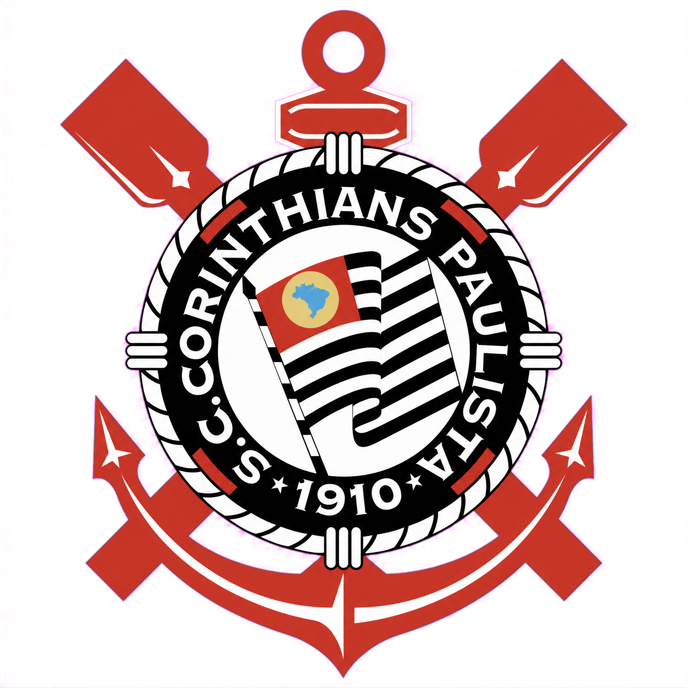
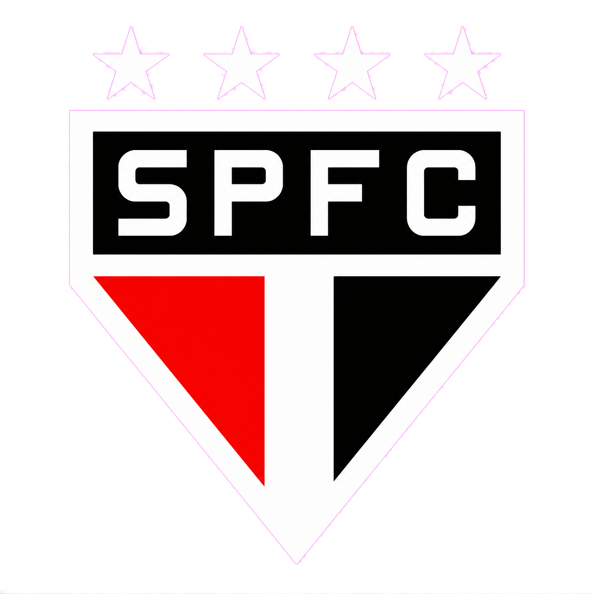
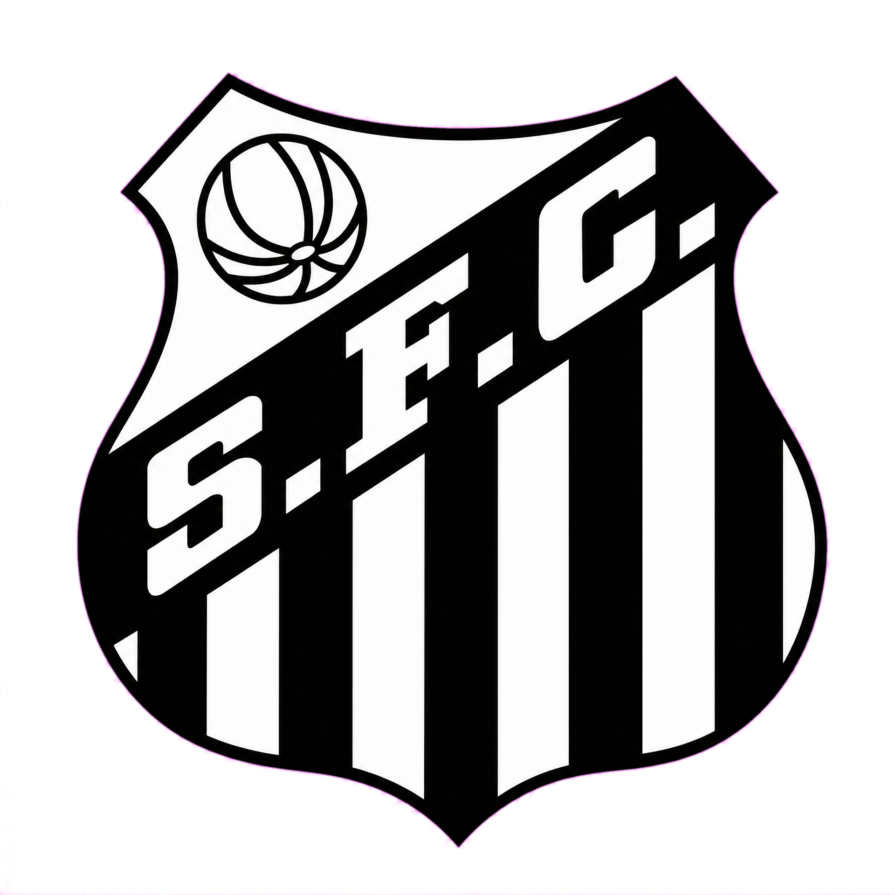
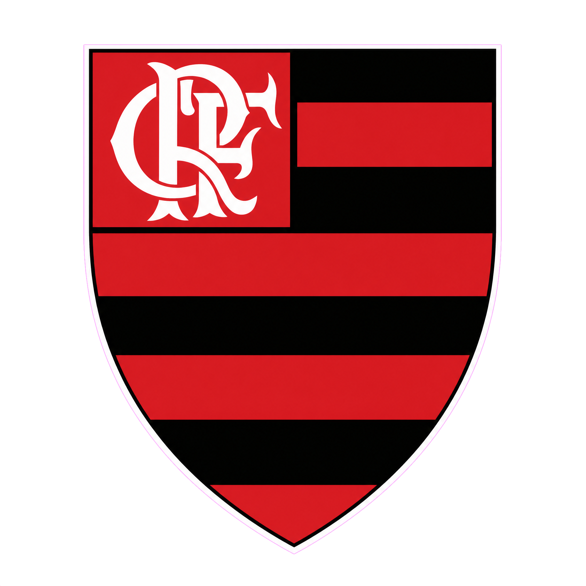
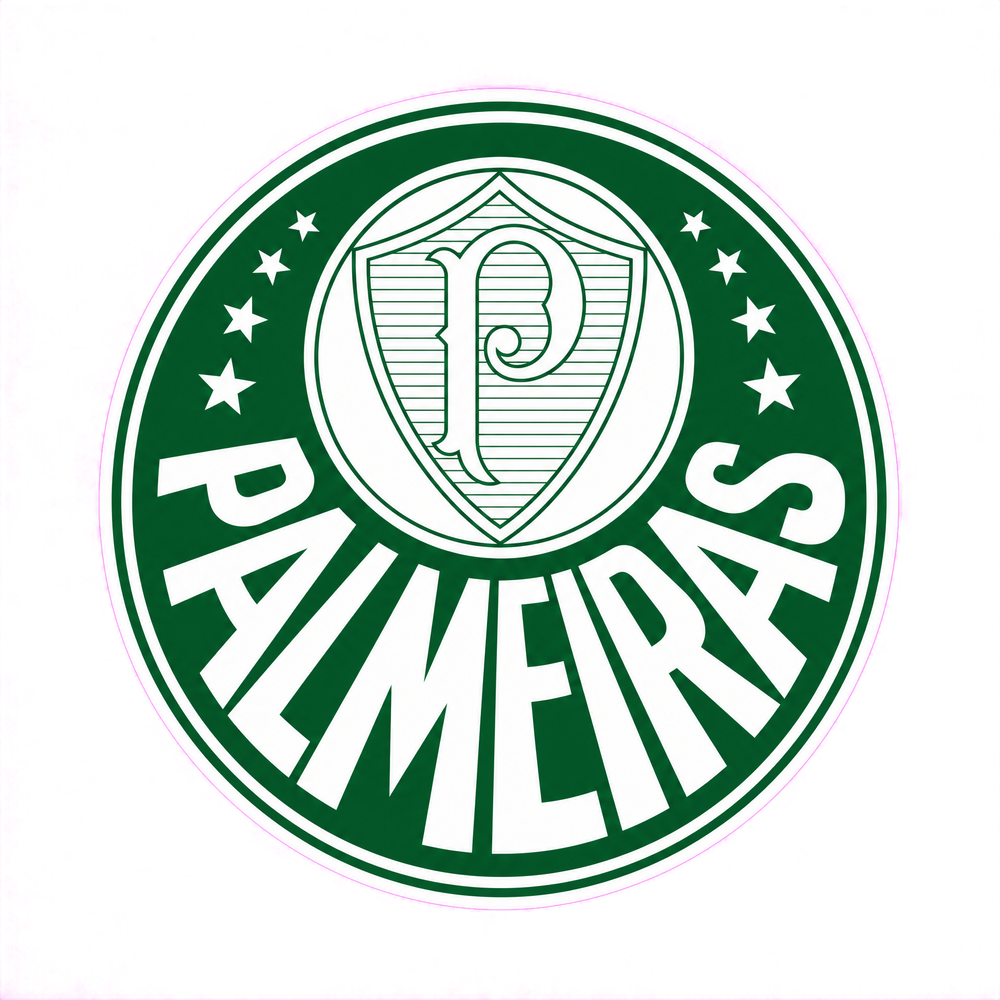

1- Corinthians
Fundado em 1910, o Sport Club Corinthians Paulista é, na minha opinião, o maior clube do Brasil. Dono da maior e mais apaixonada torcida do país, coleciona títulos históricos e representa a raça, a superação e a tradição que fazem do Timão um gigante do futebol.

2- São Paulo
Fundado em 1930, o São Paulo Futebol Clube é um dos maiores vencedores do país. Apesar de ficar atrás do Timão na minha opinião, sua história, tradição e conquistas internacionais fazem dele um dos gigantes do futebol brasileiro.

3- Santos
Fundado em 1912, o Santos Futebol Clube é conhecido mundialmente por ter revelado Pelé e diversos craques. Mesmo não sendo o maior para mim, sua importância para a história do futebol é simplesmente inegável.

4- Flamengo
Fundado em 1895, o Clube de Regatas do Flamengo possui uma das maiores torcidas do mundo mesmo não sendo tão fanática quanto a do Timão, e possui uma coleção de grandes títulos. Na minha opinião, é um gigante do futebol, mas ainda fica um degrau abaixo do Corinthians.

5- Palmeiras
Fundado em 1914, o Palmeiras é um dos clubes mais vitoriosos do Brasil, com uma trajetória repleta de conquistas. Apesar da grande rivalidade, não dá para negar a importância do Verdão para o futebol brasileiro.
6- Internacional
Fundado em 1909, o Sport Club Internacional é um dos maiores clubes do sul do Brasil e possui uma história marcada por títulos importantes. Na minha opinião, fecha com mérito a lista dos seis maiores clubes do país.